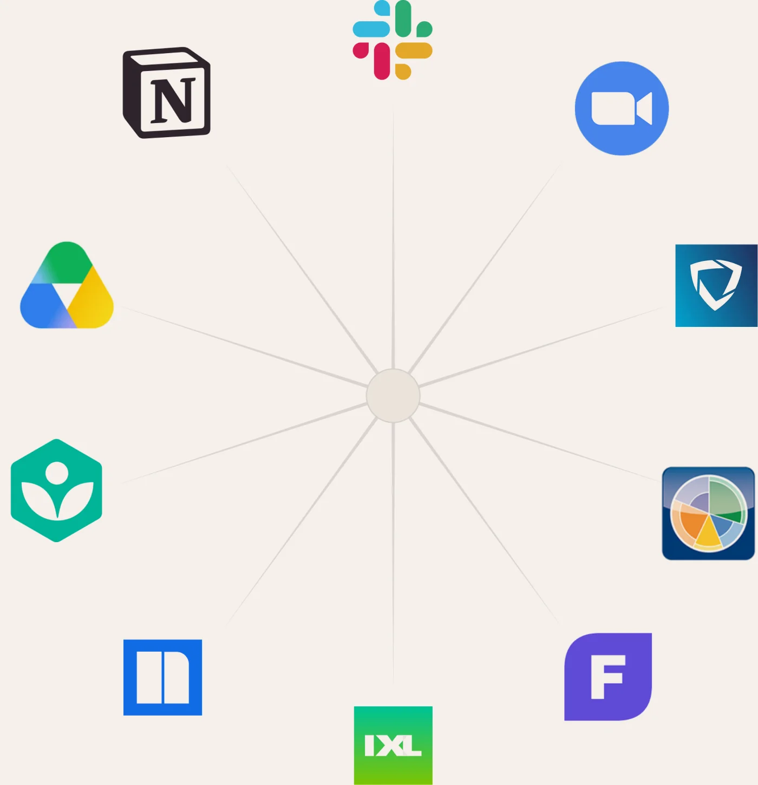
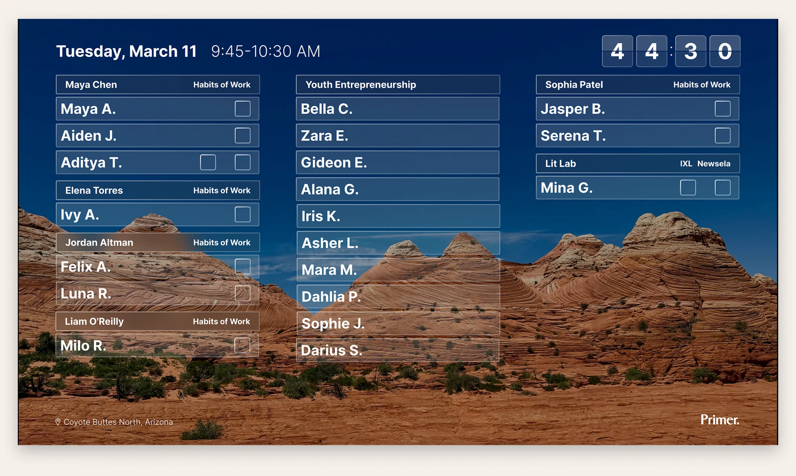
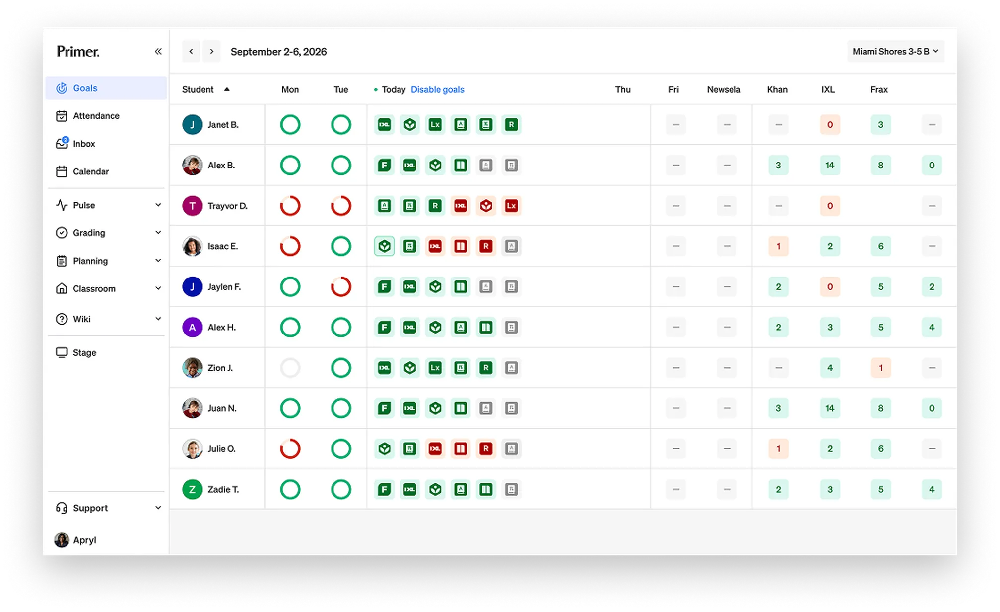
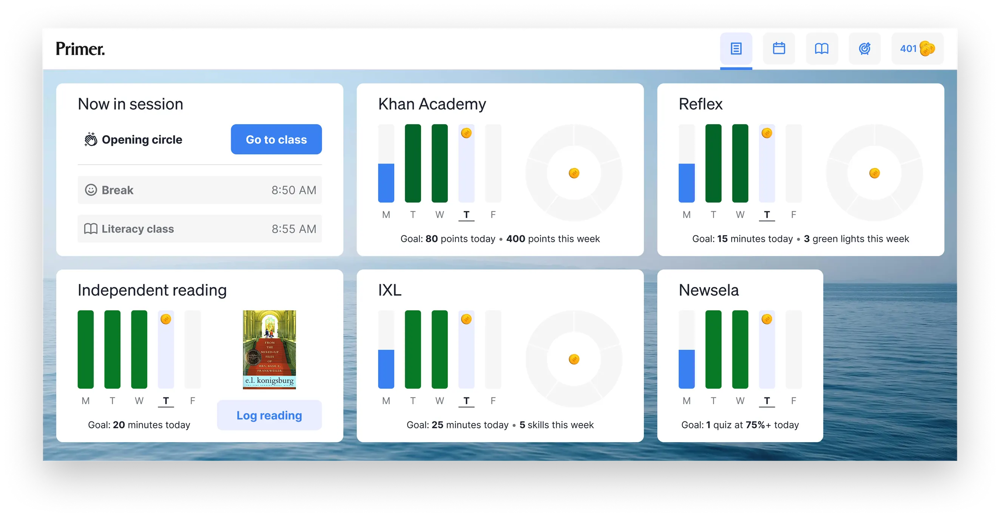
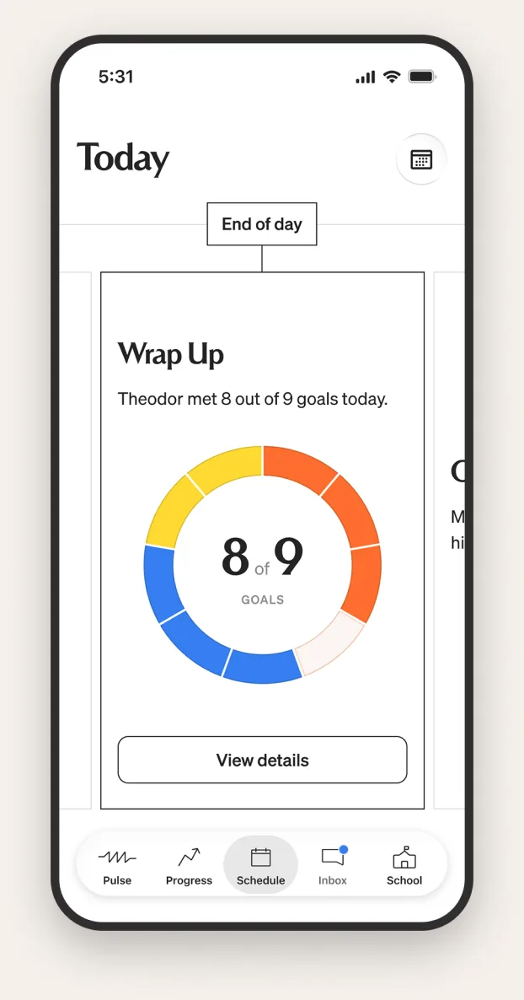
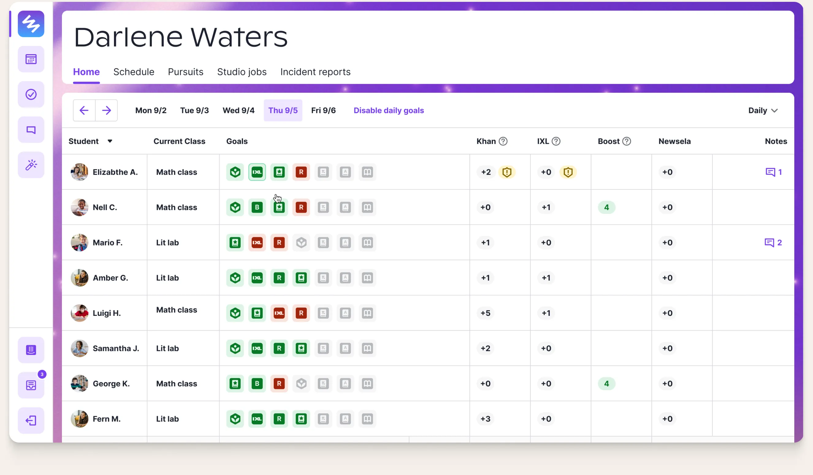

Screen 01
Placeholder — copy-only layout, for testing the flow.
This screen is a stand-in so the navigation, progress bar and keyboard arrows have something to move between. Nothing here came from the Figma file.
It also demonstrates the copy-only variant: .wt-body--copy drops the second column and lets the text run to the same 822px measure as the header subtitle.
The product problem
How do we combine a collection of tools into a single product experience?
Primer pivoted from a supplemental after school product to a full-time in person K–8 microschool network.
Running a network of physical schools needs a platform, and there wasn't one. Teachers, students, and parents were each stitching together somewhere between five and eleven different tools and learning platforms.
I owned the design of the whole platform for nearly three years, doing the core design work myself.

Four surfaces, same data
How do we combine a collection of tools into a single product experience?




Today’s discussion
How do we take a complex set of data and distill it into one glanceable view?
A student's progress lived inside multiple learning apps, and every one of them keeps tally its own way. To see one student's daily progress, a teacher opened each app and interpreted different methods for measuring progress.
The tradeoff I made deliberately: five different measurement systems (points, skills, quiz scores, minutes, topics) collapsed into one binary state. That threw away nuance on purpose, to buy a view a teacher could read in seconds while class was happening.
We’ll walk through 4 versions of this experience that spanned nearly a year of design. Each one answering a question the previous iteration exposed.
- Flat grid
- Interpretation layer
- Data on demand
- Dynamic week
- Points
- Skills
- Quiz scores
- Minutes
- Topics
- Minutes
Where we are headed...
Can one view replace opening six apps?
Flat grid
Can one view replace opening six apps?

Design approach
Consolidate every app's daily goals into a single color coded grid. One row per student, one cell per goal. Green met, red missed, grey no data.
The tradeoff I made deliberately: five different measurement systems (points, skills, quiz scores, minutes, topics) collapsed into one binary state. That threw away nuance on purpose, to buy a view a teacher could read in seconds while class was happening.
Teacher feedback
Teachers were happy at first; it saved real time and gave them a class-wide view they'd never had. Over the fall, four complaints came back consistently:
- green and red couldn't express partial progress;
- learning alerts weren't decodable at a glance;
- notes didn't carry tone or which class they came from
- milestones were buried.
The grid answered who is off track but not what do I do about it. A teacher could see a problem and still not know what it was.